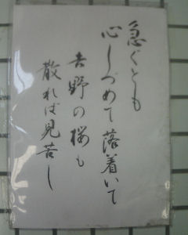

＜前置き＞
今回は迷った。
撮った時は、面白いと思って撮る。
撮ってからしばらく時間をおいて（寝かせて）判断する。
――ヨシ。
――ダメ（駄目、どちらの地にもならない打っても無駄な目）。
隠蔽するように指示や圧力があったわけではなくて。
前回は「河童駒引」について考察した。
なので、その流れの中で、河童が便所というモノについてカタるコトも許されるのではないか。
下ネタがお気に召さない方は軽く聞き流して下さい。
※注 環境保護団体がうるさいので、ほどほどに流して下さい。
＜本論＞
便所の小便器の上のタイルに貼ってあった。
急ぐとも
心しづめて
落着いて
吉野の桜も
散れば見苦し
＜回想的追記＞
約十年前に人から聞いた話なのですが
某学校のトイレの
トイレットペーパーを
カランカラン回すモノ
（あれの名前がわからない）
の上の壁に
「カミに見放されたら
ウンは自らの
手で掴め！」
と書かれた張り紙が
貼ってあったそうです。
お茶目な理事長先生の
発案だとの事です。